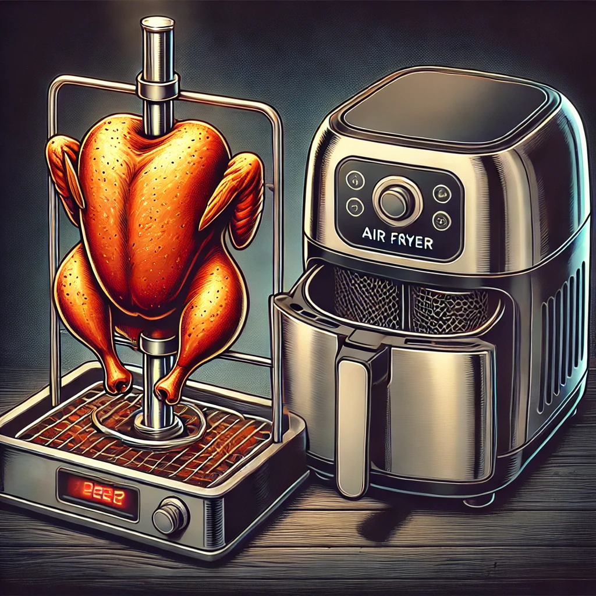

Best Air Fryer for Rotisserie Cooking
Rotisserie cooking is a fantastic way to prepare juicy, flavorful meats with a deliciously crispy exterior. With the right air fryer, you can enjoy the benefits of rotisserie cooking right at home. Here are some of the best air fryers for rotisserie cooking, chosen for their functionality, capacity, and ease of use.
1. Instant Vortex Plus 10-Quart 7-in-1 Air Fryer Oven
Key Features:
- 7-in-1 Functionality: Air fry, bake, roast, toast, broil, dehydrate, and rotisserie.
- EvenCrisp Technology: Ensures perfect crispiness every time.
- Large Capacity: 10-quart capacity, perfect for family meals.
- Rotisserie Feature: Includes a rotisserie spit, forks, and fetch tool.
Why It's Great for Rotisserie Cooking:
The Instant Vortex Plus is designed specifically for versatility, making it an excellent choice for rotisserie cooking. Its large capacity and included rotisserie accessories make it easy to prepare delicious, evenly cooked rotisserie meats.
2. GoWISE USA GW44800-O Deluxe 12.7-Quart Air Fryer Oven
Key Features:
- 12.7-Quart Capacity: One of the largest air fryers available.
- 15 Preset Functions: For a wide range of cooking options, including rotisserie.
- Rotisserie Kit: Comes with a rotisserie spit, forks, rotisserie cage, and skewers.
- Easy to Use: Digital display and simple controls.
Why It's Great for Rotisserie Cooking:
The GoWISE USA Deluxe Air Fryer Oven's large capacity and comprehensive rotisserie kit make it perfect for cooking whole chickens and other rotisserie dishes. Its presets and ease of use add to its appeal.
3. Chefman 6.3-Quart Digital Air Fryer+ Rotisserie
Key Features:
- Multifunctional: Air fry, roast, dehydrate, and rotisserie.
- Digital Touchscreen: Easy-to-use controls with built-in presets.
- Interior Lighting: Allows you to monitor your food while it cooks.
- Compact Design: Fits easily on most countertops.
Why It's Great for Rotisserie Cooking:
The Chefman Digital Air Fryer+ Rotisserie is perfect for those with limited kitchen space. Its compact design doesn’t compromise on functionality, and the interior lighting makes it easy to keep an eye on your rotisserie creations.
4. PowerXL Air Fryer Pro 6-Quart
Key Features:
- 6-Quart Capacity: Suitable for smaller rotisserie dishes.
- 8 Preset Functions: Includes a rotisserie function.
- Rotisserie Kit: Comes with a rotisserie spit, forks, and retrieval tool.
- Rapid Air Technology: Ensures even cooking.
Why It's Great for Rotisserie Cooking:
The PowerXL Air Fryer Pro offers a dedicated rotisserie function and all the necessary accessories in a more compact size. It’s perfect for smaller kitchens and those who don’t need to cook large quantities at once.
5. Emeril Lagasse Power AirFryer 360
Key Features:
- 12 Pre-Set Cooking Functions: Air fry, bake, rotisserie, dehydrate, toast, roast, and more.
- 5 Heating Elements: For even cooking.
- Rotisserie Function: Includes rotisserie spit, forks, and a rotisserie stand.
- Large Capacity: Fits a 4-pound chicken.
Why It's Great for Rotisserie Cooking:
The Emeril Lagasse Power AirFryer 360 is versatile and powerful, with multiple pre-set cooking functions and a comprehensive rotisserie kit. Its five heating elements ensure even cooking, making it a great choice for rotisserie enthusiasts.
Conclusion
Rotisserie cooking at home is easy and delicious with the right air fryer. The models listed above offer excellent features and capacities to ensure your rotisserie meals are cooked to perfection. Whether you're cooking for yourself, your family, or a group of friends, these air fryers will help you create mouth-watering rotisserie dishes with ease.